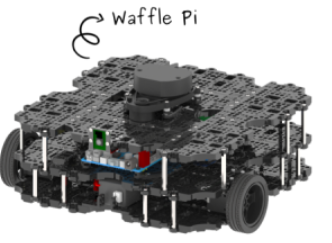
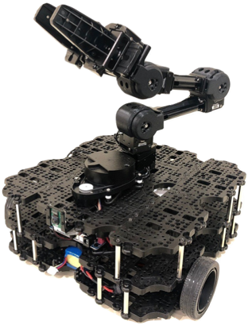

Warszawa
+48 123 456 789
aleks.leon@gmail.com
github.com/aleksleon
Absolwent kierunku Robotyka.
Posiadam doświadczenie w pracy z ROS, symulacjach Gazebo oraz systemach lokalizacji robota (AMCL).
Zainteresowany robotyką mobilną i systemami autonomicznymi.
Politechnika Warszawska kierunek Robotyka
Studia inżynierskie (2019–2023)
Studia magisterskie (2023–2025)
Polski – ojczysty
Angielski – B2